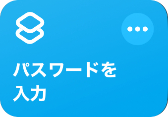
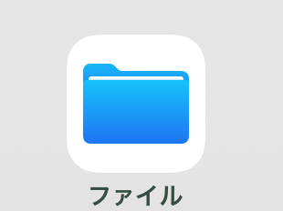

ショートカットのダウンロード
1. ショートカットをダウンロードしてください。

2. ショートカットをダウンロードしてください。その際、パスワードを設定してください。

3. ※アクセスガイドを自分で解除できることを確認してください。できなければ、実行しないでください。
違法ログインブロッカーを実行し、アクセスガイド、カメラ、写真へ保存、別のショートカットを実行を全て許可してください。
※音が鳴ってはまずい場所では絶対に実行しないでください。
使い方
1. アプリの写真を取ります。

2. ショートカットを開き、違法ログインブロッカーを長押しし、共有、ホーム画面に追加を順番に押してください。
上から2つ目の項目の左側を押し、写真を選択を押してください。
撮った写真を選択し、ちょうどぴったりになるように画像を動かしてください。

違法ログイ…を押し、名前を撮った写真のアプリ名にしてください。
最後に追加を押して完了です。